A vector field assigns a vector to every point of the plane. In
ggvfields a field is just an R function: it takes a
point u = c(x, y) and returns the vector
c(dx, dy) at that point. This article shows the layers that
draw such a function, how to control their lengths and colors, and where
to put the seeds.
rotation <- function(u) c(-u[2], u[1])Vectors
geom_vector_field() evaluates the function on a grid and
draws one vector at each point. By default every vector has the same
length, a little less than the grid spacing, and color shows the
vector’s size (its norm).
ggplot() +
geom_vector_field(fun = rotation, xlim = c(-1, 1), ylim = c(-1, 1)) +
coord_equal()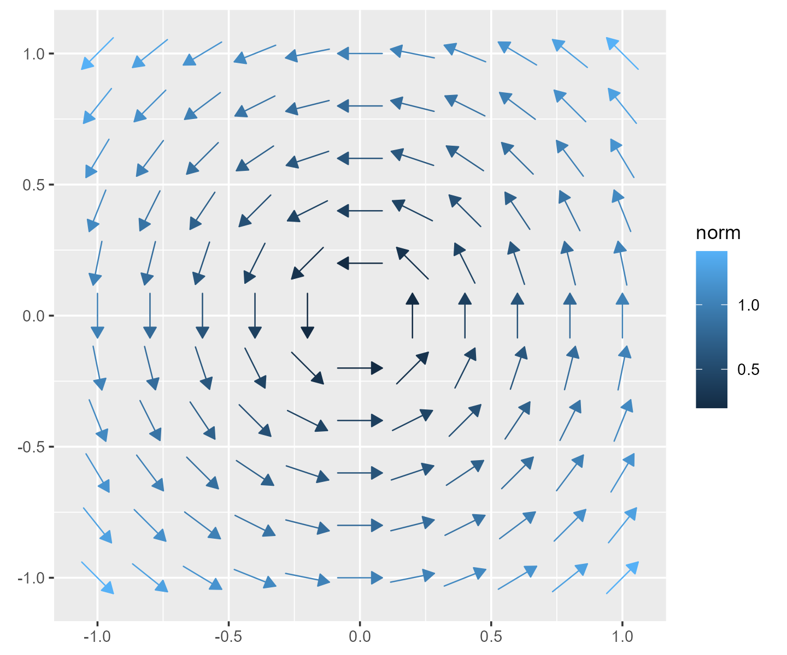
-
nsets the number of grid points along each axis. -
center = TRUE(the default) centers each vector on its grid point;center = FALSEstarts it there. -
normalize = FALSEdraws each vector at its own size, from(x, y)to(x, y) + fun(x, y).
geom_vector_field2() shows size with length
instead of color: a vector with half the largest norm is drawn half as
long. Lengths are absolute (in centimeters), so the legend matches the
plot at any size.
ggplot() +
geom_vector_field2(fun = rotation, xlim = c(-1, 1), ylim = c(-1, 1), n = 9) +
coord_equal()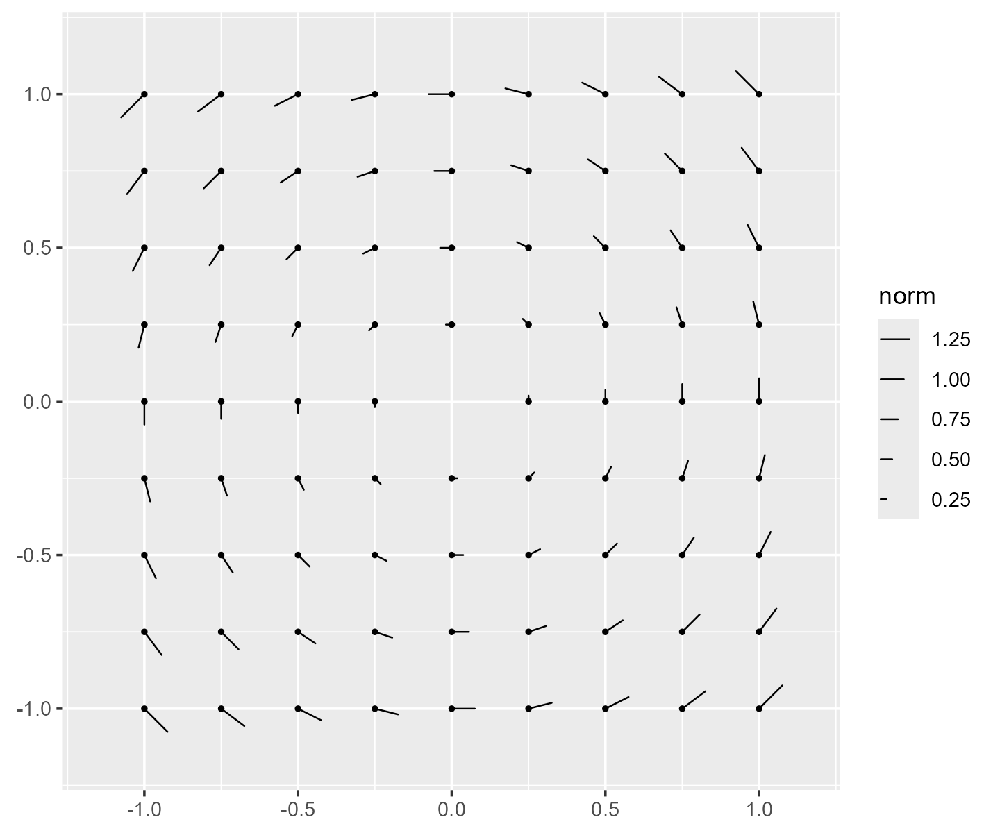
scale_length_continuous() sets the length of the longest
vector (max_range, in centimeters) and accepts a
transformation. With a log scale every vector keeps its direction, even
for norms below 1.
f <- efield_maker()
ggplot() +
geom_vector_field2(fun = f, xlim = c(-2, 2), ylim = c(-2, 2)) +
scale_length_continuous(max_range = 0.6, transform = "log10") +
coord_equal()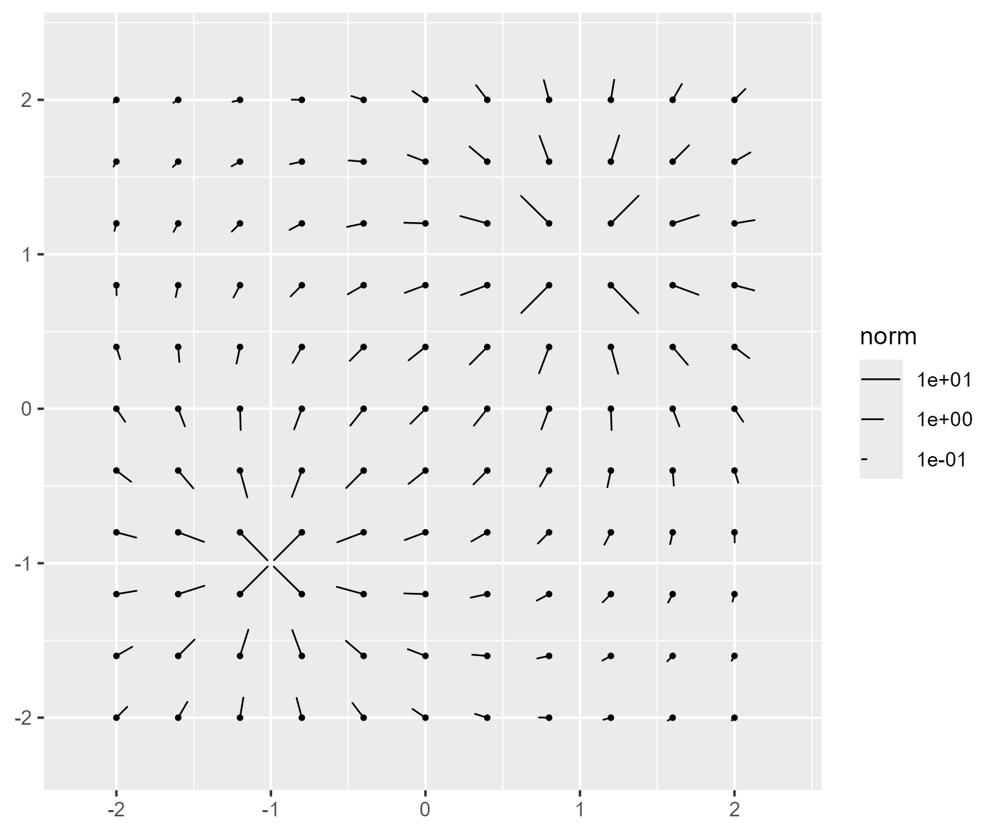
Streams
A stream follows the field: it is the path a particle would take if
it moved with the flow. geom_stream_field() grows a stream
from each grid point to the same length L and colors it by
its average speed, avg_spd.
ggplot() +
geom_stream_field(fun = rotation, xlim = c(-1, 1), ylim = c(-1, 1)) +
coord_equal()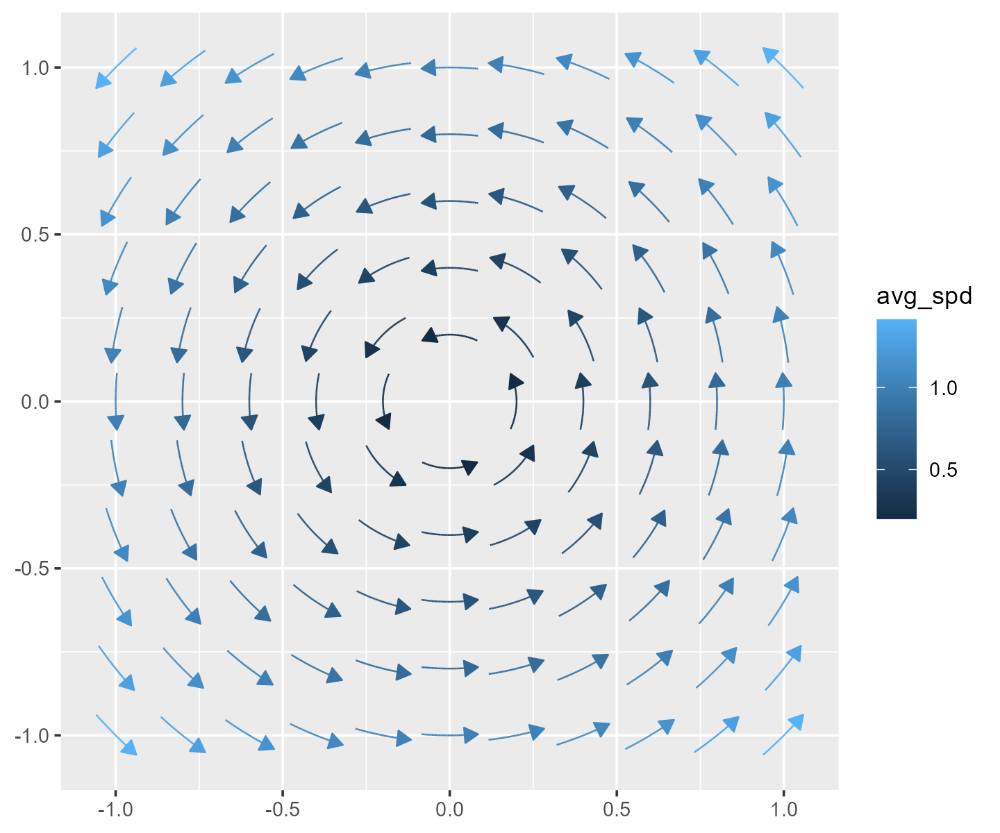
geom_stream_field2() lets length show speed instead.
Every stream is grown until the fastest one reaches L, then
all of them are stopped at that same moment, so slow streams are short.
Each stream’s seed is marked with a dot.
vortex <- function(u) c(-u[2], u[1]) * exp(-sum(u^2) / 2)
ggplot() +
geom_stream_field2(fun = vortex, xlim = c(-3, 3), ylim = c(-3, 3), n = 13) +
coord_equal()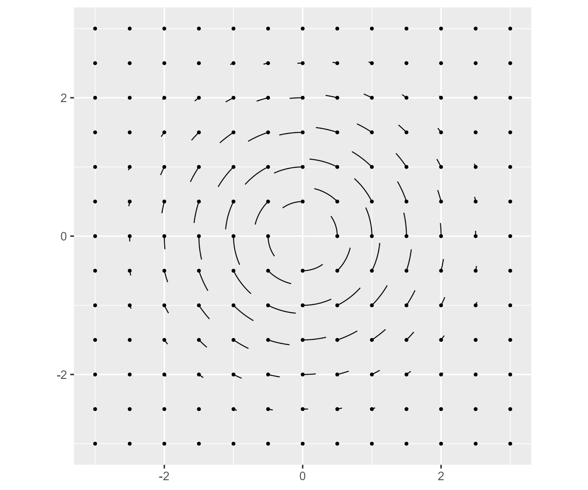
You can also run every stream for the same amount of time. With
normalize = FALSE, T sets that time; each
stream then has the length its particle covers in time
T.
ggplot() +
geom_stream_field(fun = vortex, xlim = c(-3, 3), ylim = c(-3, 3),
normalize = FALSE, T = 0.5) +
coord_equal()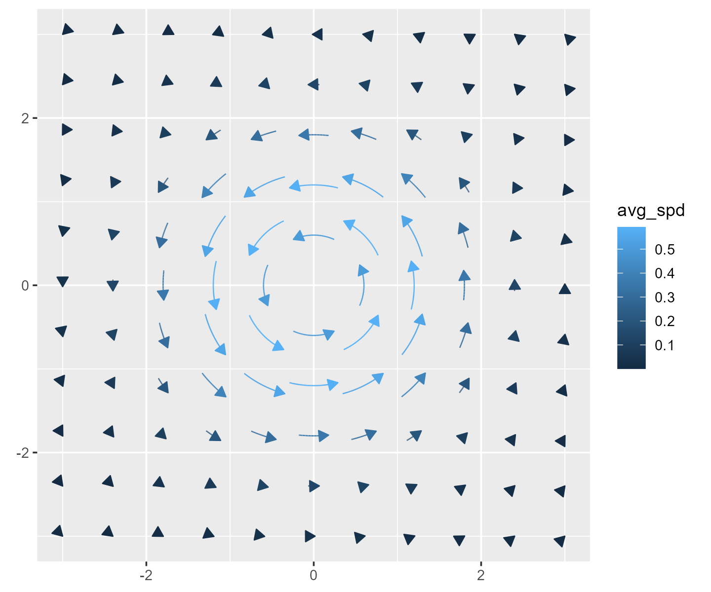
Integrators
Streams are computed with a Runge-Kutta 4 integrator
(method = "rk4"). It stops streams at sinks and at
singularities, such as the point charges of an electric field, and
carries them across jumps in the field. The adaptive solver from
deSolve is available as method = "lsoda",
and Euler’s method as method = "euler".
ggplot() +
geom_stream_field(fun = f, xlim = c(-2, 2), ylim = c(-2, 2), n = 13) +
coord_equal()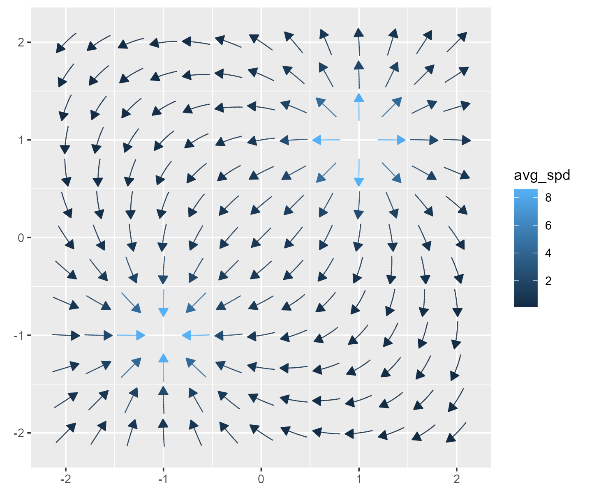
Where the seeds go
By default the seeds lie on an n by n grid.
There are three alternatives.
Your own points. Pass a data frame with columns
x and y as grid; the default
length follows the spacing of your points.
set.seed(1)
seeds <- data.frame(x = runif(60, -1, 1), y = runif(60, -1, 1))
ggplot() +
geom_stream_field(fun = rotation, grid = seeds) +
coord_equal()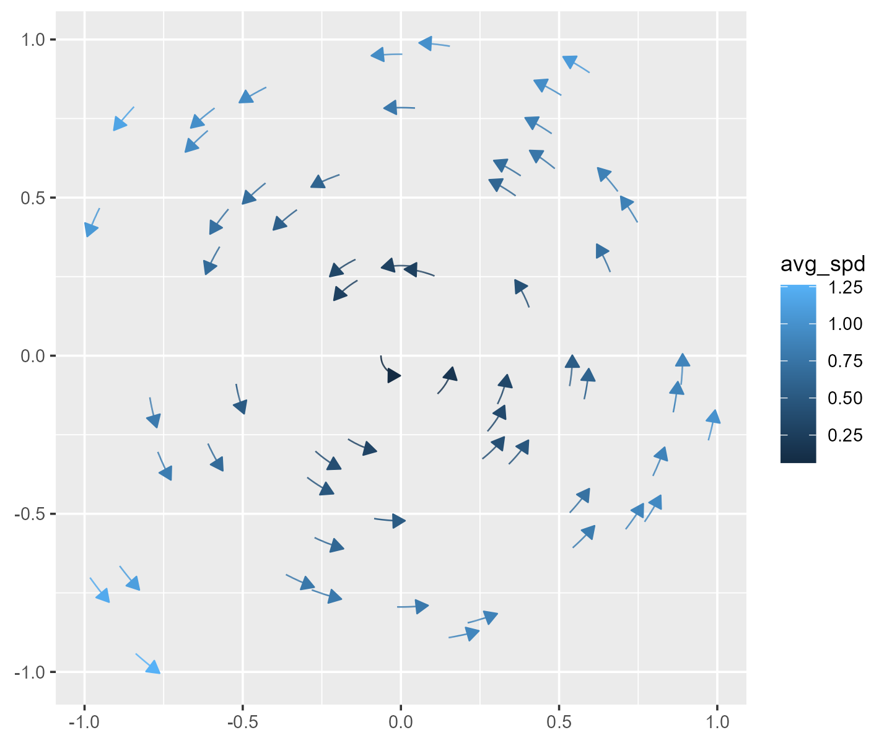
Evenly spaced streamlines.
grid = "even" grows long streams that stay about one grid
spacing apart, starting new ones beside earlier ones until the plot is
filled (Jobard and Lefer, 1997). n sets the density.
ggplot() +
geom_stream_field(fun = f, xlim = c(-2, 2), ylim = c(-2, 2),
grid = "even", n = 16) +
coord_equal()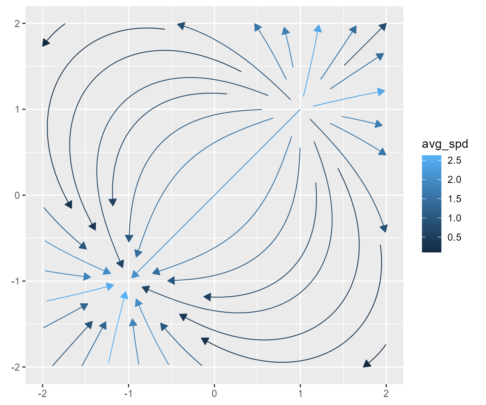
Part of the plot. A domain function
restricts a field to a region. It takes a point, like fun,
and returns TRUE inside the region. Seeds outside are
dropped and streams stop at the boundary, so a function that is only
defined on part of the plot can be drawn there.
disk <- function(u) sum(u^2) <= 1
ggplot() +
geom_stream_field(fun = rotation, xlim = c(-1, 1), ylim = c(-1, 1),
grid = "even", n = 14, domain = disk) +
coord_equal()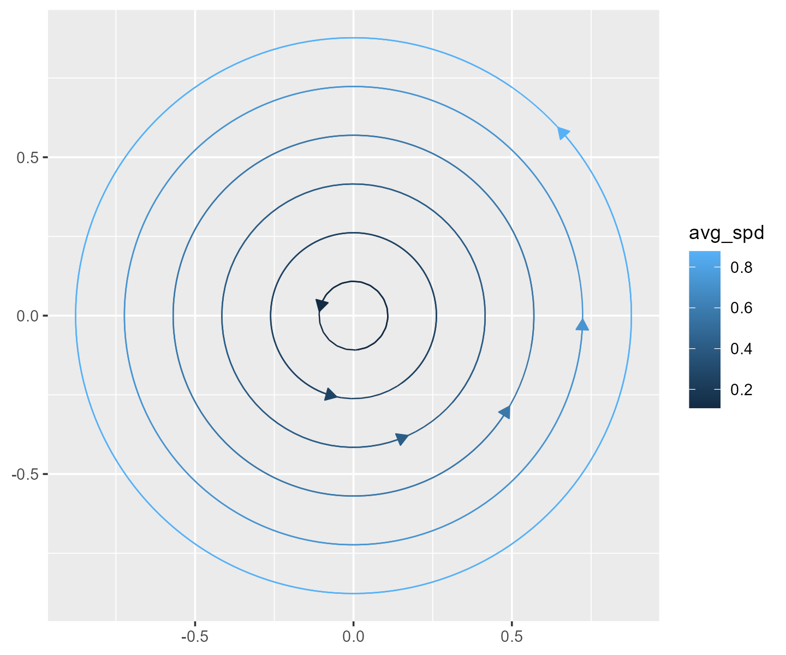
Gradients and potentials
For a scalar function g(x, y),
geom_gradient_field() draws its gradient, the direction of
steepest ascent, computed numerically. It takes the same arguments as
the vector and stream layers; type = "stream" draws
streams.
hills <- function(u) sin(2 * u[1]) * cos(2 * u[2])
ggplot() +
geom_gradient_field(fun = hills, xlim = c(-2, 2), ylim = c(-2, 2)) +
coord_equal()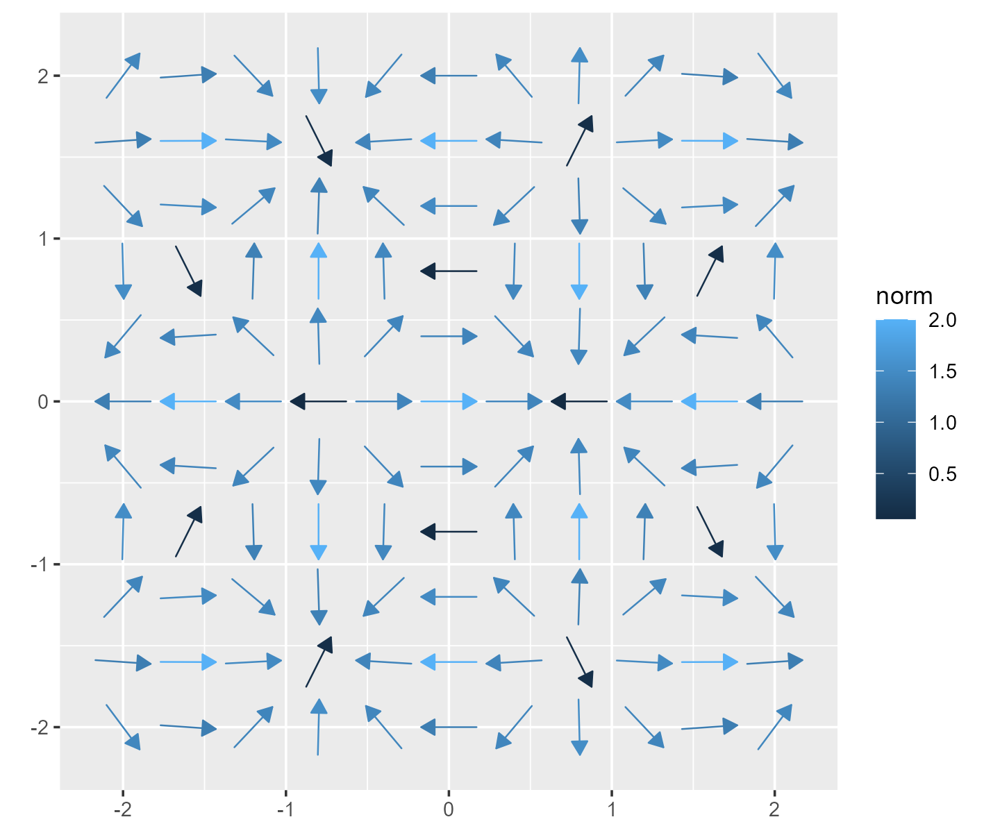
Going the other way, geom_potential() recovers the
potential of a conservative field, the scalar function whose gradient
the field is, and draws it as a raster. Here the field is the gradient
of -(x^2 + y^2).
inward <- function(u) c(-2 * u[1], -2 * u[2])
ggplot() +
geom_potential(fun = inward, xlim = c(-2, 2), ylim = c(-2, 2)) +
geom_vector_field(fun = inward, xlim = c(-2, 2), ylim = c(-2, 2), color = "white") +
coord_equal()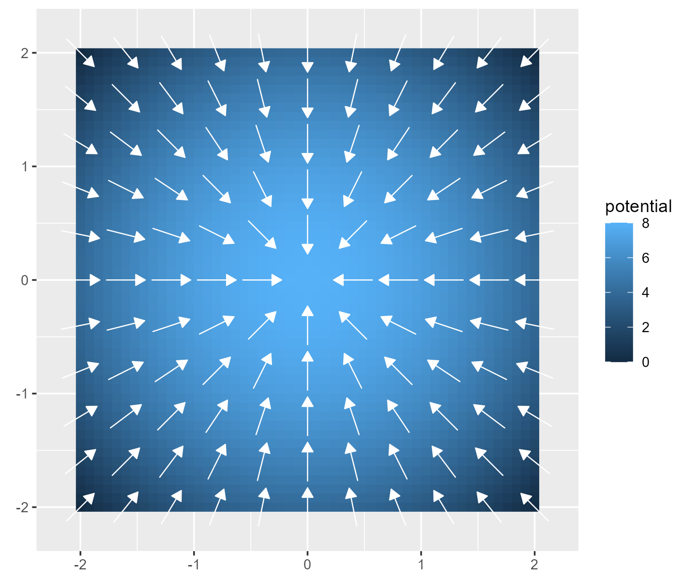
With verify_conservative = TRUE,
geom_potential() checks that the field has a potential and
warns where it does not.
Electric fields
efield() computes the electric field of point charges,
and efield_maker() returns it as a field function.
log = TRUE replaces each vector’s norm |F|
with log(1 + |F|), which tames the field near the
charges.
quad <- efield_maker(
charge_positions = rbind(c(-1, -1), c(1, -1), c(1, 1), c(-1, 1)),
charges = c(1, -1, 1, -1),
log = TRUE
)
ggplot() +
geom_stream_field(fun = quad, xlim = c(-2.5, 2.5), ylim = c(-2.5, 2.5),
grid = "even", n = 18) +
coord_equal()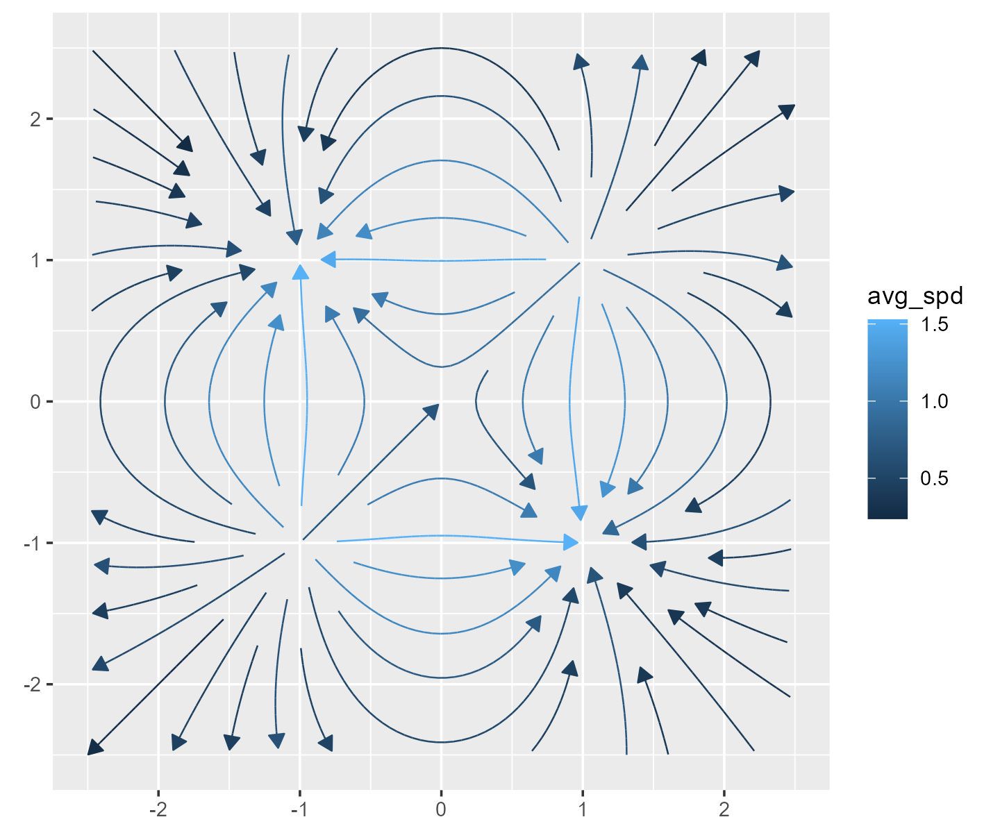